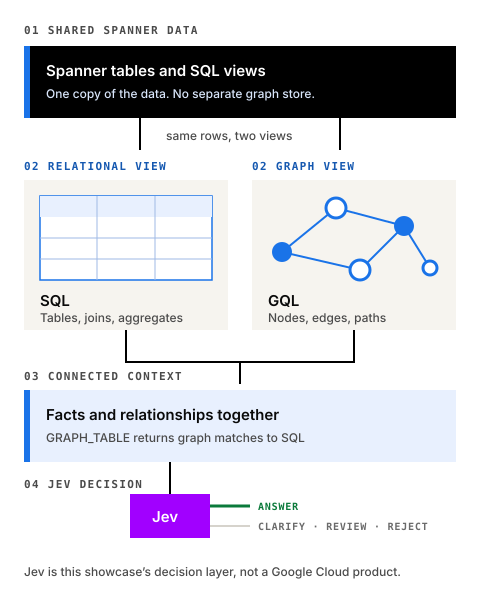

Spotlight
Google Cloud Spanner Graph
One database. Relational and graph views.
Spanner Graph maps tables or SQL views into a property graph without copying data. GQL for graph patterns, SQL for relational work, or both.
- Multi-model, per Google Cloud: a property graph schema declared over existing tables or views. Needs Enterprise or Enterprise Plus edition.
- Graph queries use an ISO GQL-compatible interface.
- GoogleSQL reads graph matches through
GRAPH_TABLE, so graph and relational results meet in one query. - It inherits Spanner’s scale, availability and strong consistency.
Capabilities are from Google Cloud documentation. Grades and scores below are this site’s independent judgement. This spotlight does not change them; Spanner Graph keeps its evidence-based B grade. Jev, TypeSafe's System 1 decision model, is not a Google Cloud product.

Strong fit
- Operational data already lives in Spanner.
- You need relational and relationship queries over the same data.
- Strong consistency and managed multi-region matter.
- You prefer a managed Google Cloud database.
- Graph context should sit next to transactional facts, not in a synced copy.
Consider carefully
- It is a Google Cloud service, not portable or embedded.
- Cost and capacity follow Spanner’s model.
- Test schema mapping, query shape, latency and traversal depth on representative data.
- Test the GQL features and graph algorithms you need; do not assume parity with graph-native products.
- A dedicated graph store may suit some graph-first workloads better.